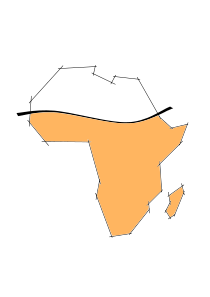

I am an agronomist and farming systems researcher at CIRAD (UMR AIDA, ESTIME team), working on agroecological transitions and smallholder farm household analysis. My research covers the agronomic and economic dimensions of farming systems — from field-level crop management to whole-farm modelling under climate and market uncertainty.
A recurring focus of my work is understanding how smallholder farmers make decisions, what constraints they face, and how agroecological intensification can become both technically viable and economically attractive for them. I work across a range of tropical and sub-tropical contexts in sub-Saharan Africa.
My current work is centred on the EU-funded RAIZ project (Resilience building through Agroecological Intensification in Zimbabwe), where I focus on three interconnected activities: coordinating the living lab approach that brings together farmers, extension services, and researchers; monitoring the network of reference farms to track agronomic and economic performance over time; and working on climate information services — studying how smallholder farmers access and use seasonal forecasts to support agroecological decision-making.
Farm Monitoring · Data Pipeline
KoboToolbox-to-SQLite data pipeline with interactive dashboards and automated PDF reporting for ward-level monitoring. Includes GPS plot boundary collection and spatial analysis with R.
Optimisation · Research
GAMS-based linear programming model for whole-farm household optimisation, solved via HiGHS. Produces detailed scenario analyses to support agricultural policy research and farm advisory work.
Farming System Design Conference (FSD8), Palaiseau DOI →
Climate Services · vol. 34, p. 100450 DOI →
Computers and Electronics in Agriculture · p. 106570 DOI →
Agricultural Water Management · vol. 192, pp. 281–293 DOI →
Experimental Agriculture · vol. 51(1), pp. 66–84 DOI →
Agricultural Systems · vol. 134, pp. 36–47 DOI →
Full list on Agritrop →
Open to research collaborations and conversations about agroecological transitions, smallholder farming systems, or farm household modelling — across any context.